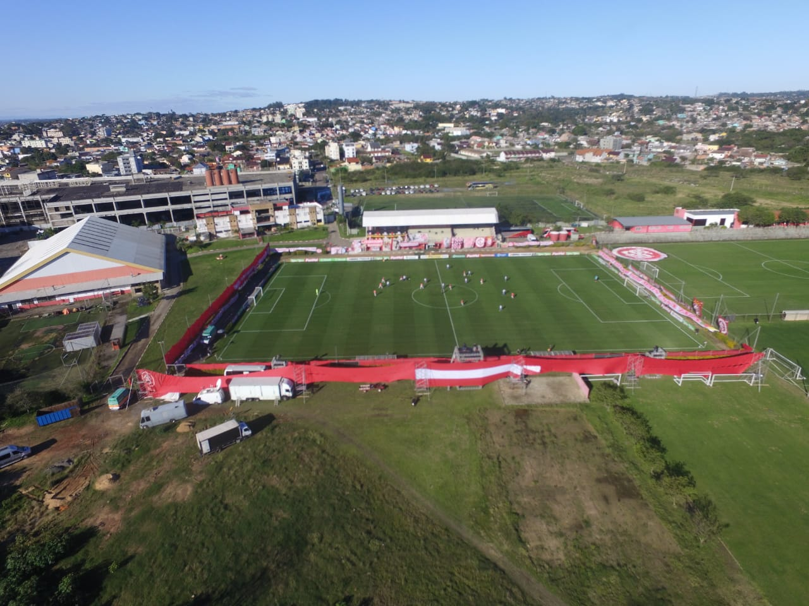
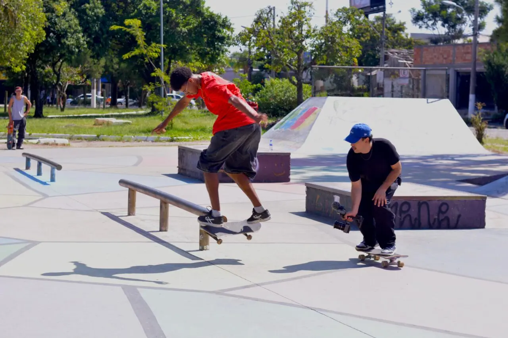
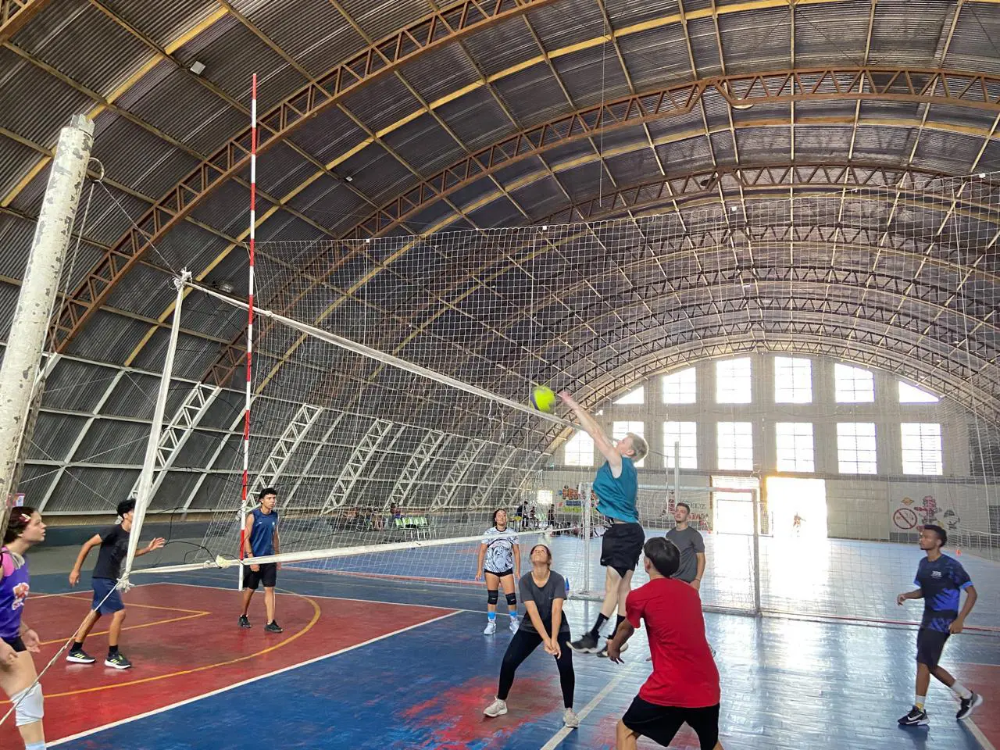

<ion-header [translucent]="true">
  <ion-toolbar>
    <ion-title>
      Esportes
    </ion-title>
  </ion-toolbar>
</ion-header>

<ion-content [fullscreen]="true">
  <ion-list>
    <ion-item [routerLink]="['/futebol']">
      <ion-thumbnail slot="start">
        
      </ion-thumbnail>
      <ion-label>
        <ion-text color="primary">
          <h2>Futebol</h2>
        </ion-text>
      </ion-label>
      <ion-icon slot="end" name="chevron-forward-outline"></ion-icon>
    </ion-item>

    <ion-item [routerLink]="['/skate']">
      <ion-thumbnail slot="start">
        
      </ion-thumbnail>
      <ion-label>
        <ion-text color="primary">
          <h2>Skate</h2>
        </ion-text>
      </ion-label>
      <ion-icon slot="end" name="chevron-forward-outline"></ion-icon>
    </ion-item>

    <ion-item [routerLink]="['/vale-conferir']">
      <ion-thumbnail slot="start">
        
      </ion-thumbnail>
      <ion-label>
        <ion-text color="primary">
          <h2>Vale Conferir</h2>
        </ion-text>
      </ion-label>
      <ion-icon slot="end" name="chevron-forward-outline"></ion-icon>
    </ion-item>
  </ion-list>
</ion-content>